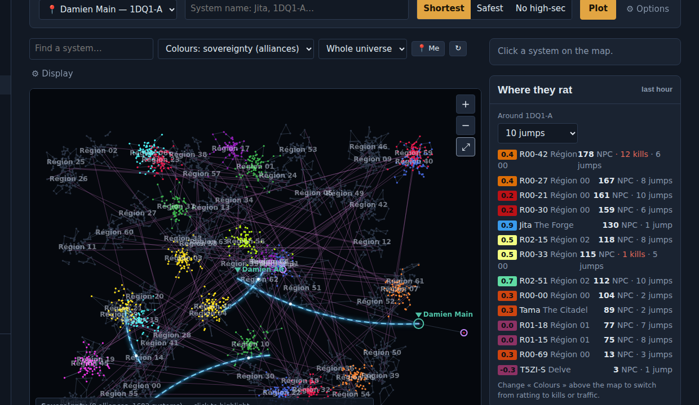
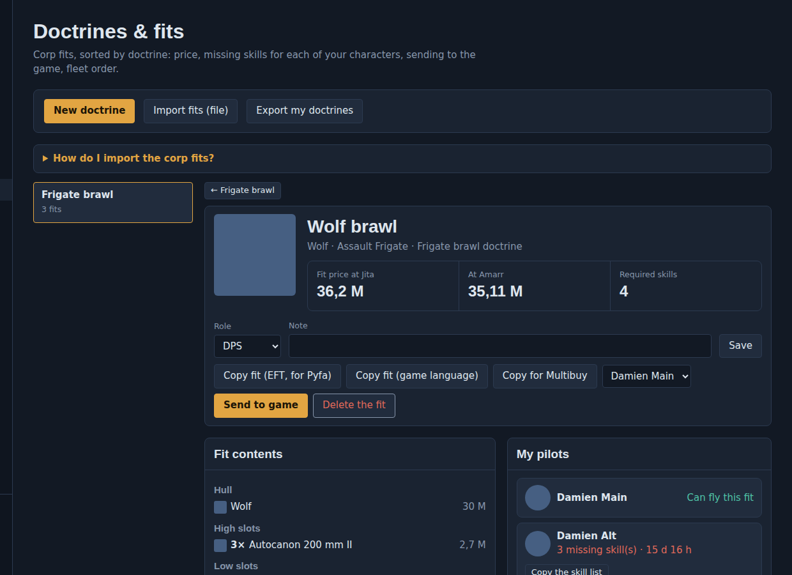
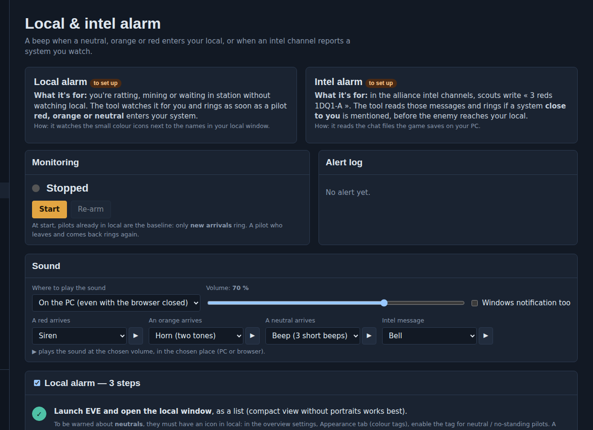
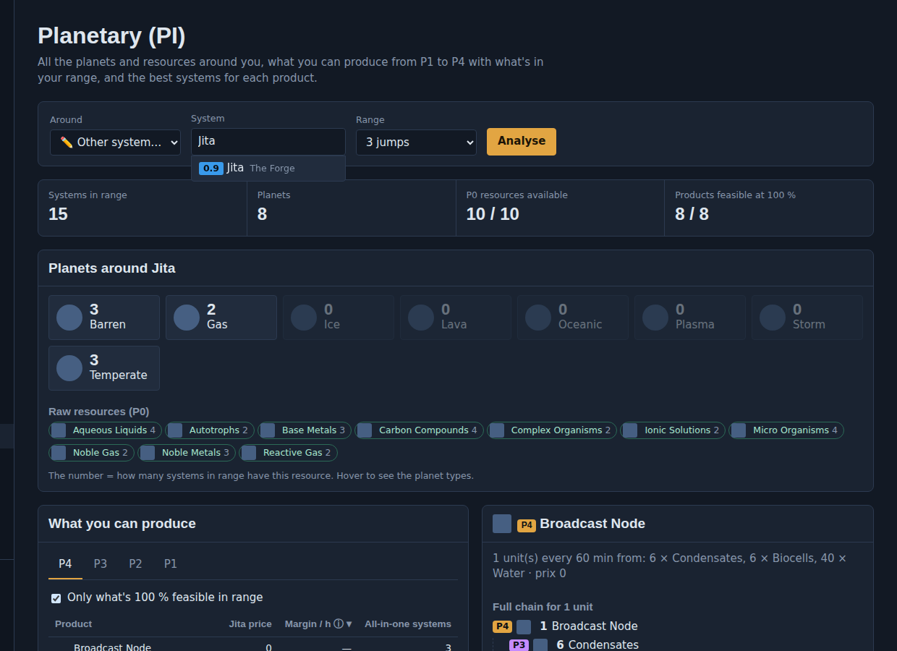
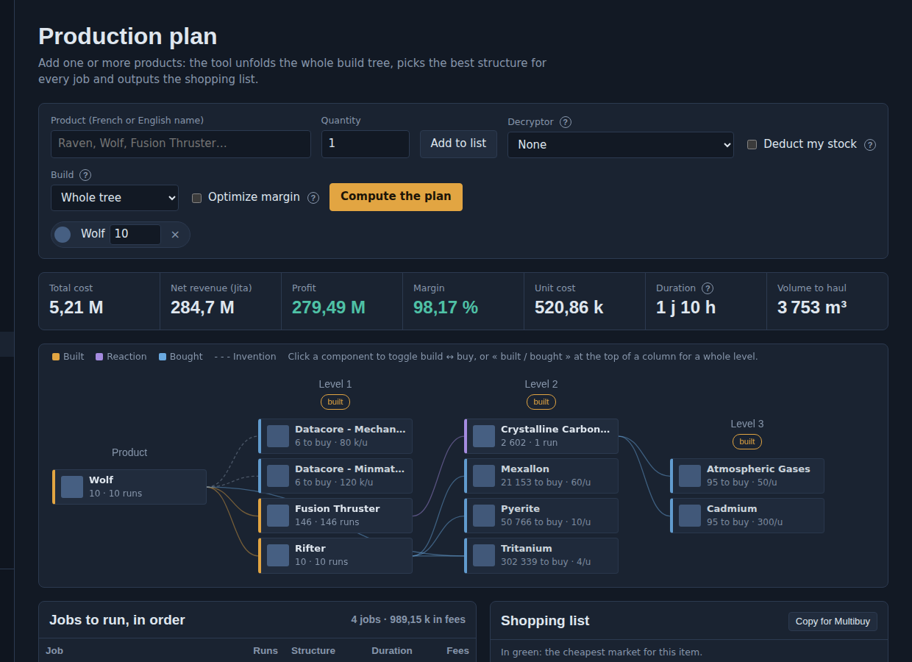
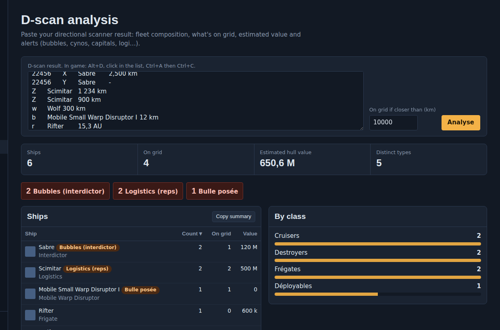

Free · Runs on your PC · For EVE Online
Your whole EVE life,
in one cockpit.
Doctrines, local alarm, galaxy map with your alliance bridges, planetary chains from P0 to P4 and a full industry planner. Everything a capsuleer needs to fight, travel and make ISK — without juggling ten websites.
- ✓ 100% free, no ads
- ✓ Your data stays on your PC
- ✓ Official EVE login (SSO)
- ✓ 5 languages


Built for pilots who play seriously
PvP & fleets
Know which fits each of your characters can fly, send the whole doctrine to the game in one click, and never get caught by a neutral in local again.
Navigation & hunting
A live map of New Eden with your alliance jump bridges, Thera and Turnur, kills and ratting of the last hour — find your next target or your safest route.
Industry & ISK
From raw planet resources to T2 ships: full build trees, best structures, invention, opportunities and arbitrage, priced on real market data.
Everything Cockpit does
Click a feature to see it in detail.
Doctrines & fits
Your corp's doctrines, ready in every pilot's game.
Learn more →Galaxy map
New Eden as a hunter sees it.
Learn more →
Local & intel alarm
Never get caught by a neutral again.
Learn more →
Planetary (PI)
The best planets around you, from P0 to P4.
Learn more →
Production planner
From minerals to T2 ships, planned to the last unit.
Learn more →
D-scan analysis
Know what's coming before it lands.
Learn more →T2 invention
The right decryptor, every time.
Learn more →Industry opportunities
What to build today for the most ISK.
Learn more →Hub arbitrage
Buy low in one hub, sell high in another.
Learn more →Characters & stock
All your accounts, one view.
Learn more →Running jobs
Every industry job of every character.
Learn more →Up and running in 5 minutes
Download
Unzip and double-click. No install wizard, no account to create.
Connect your characters
Official EVE login. Add as many characters and accounts as you like.
Fly
Cockpit reads your skills, hangars and fits, and does the boring work for you.
Questions pilots ask
Is it allowed by CCP?
Cockpit uses the official EVE API (ESI) and the official EVE login. It never sends keys or clicks to the game client and never reads its memory. The optional local alarm watches your screen like your eyes would; CCP does not officially endorse screen-reading tools, so it is your call to use it.
Is my account safe?
Your login tokens stay on your PC. Cockpit reads data and only writes what you explicitly ask for (saving fits, setting a destination). You can revoke access at any time on the EVE website.
Does it cost anything?
No. Cockpit is free and will stay free. If it helps you, you can support the developer with an ISK donation.
Windows only?
The .exe is for Windows. The tool also runs on macOS and Linux with Python; the local alarm's window tracking is Windows-only.

Support Cockpit with ISK
Cockpit is free, ad-free and developed on the side. If it saved you time, ISK or a fleet, an ISK donation keeps new features coming.
- Find the pilotIn game, search for the name below and open their info window.
- Right-click the portraitThen choose « Give Money ».
- Add a reasonWrite « Cockpit » so we know where the support comes from.
Even easier: in Cockpit, open « Support Cockpit » and click « Open their profile in my game ».
ISK is in-game currency and cannot be exchanged for real money, in line with EVE Online's rules. Every donor gets exactly the same Cockpit — no paid advantage, ever.